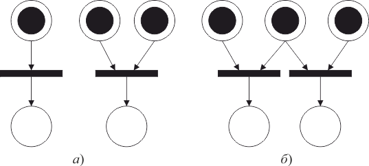

Особенность сетей Петри – их асинхронная природа. В сетях Петри отсутствует измерение времени. В них учитывается лишь важнейшее свойство времени – частичное упорядочение событий.
Выполнение сети Петри (или поведение моделируемой системы) рассматривается здесь как последовательность дискретных событий, которая является одной из возможных. Если в какой-то момент времени разрешено более одного перехода, то любой из них может стать «следующим» запускаемым. Переходы в сети Петри, моделирующей некоторую систему, представляют ее примитивные события (длительность которых считается равной 0), и в один момент времени может быть запущен только один разрешенный переход.
Моделирование одновременного (параллельного) возникновения независимых событий системы в сети Петри демонстрируется на рисунке 4.5, а. В этой ситуации два перехода являются разрешенными и не влияют друг на друга в том смысле, что могут быть запущены один вслед за другим в любом порядке.
Другая ситуация в приведенной на рисунке 4.5, б сети Петри. Эти два разрешенных перехода находятся в конфликте, т. е. запуск одного из них удаляет фишку из общей входной позиции и тем самым запрещает запуск другого. Таким образом, моделируются взаимоисключающие события системы.

Рис. 4.5 – Сети Петри для моделирования параллельных процессов